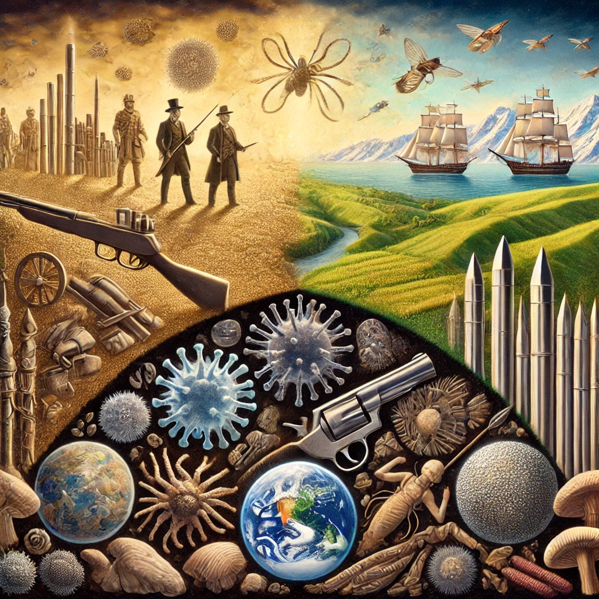

총,균,쇠
목차
작가
재레드 다이아몬드
출판일
1997년 (최초)
감상평에 대한 AI그림
전쟁에 대한 역사를 다룰 것만 같은 책 이름 총,균,쇠는 제목과는 달리 문명 발전 속도 차이의 이유에 대해 고찰하는 책이다. 여기서 총,균,쇠는 유럽의 국가가 아메리카 신대륙을 점령할 수 있게한 도구들로써 문명 간의 격차를 보여주는 제목이라 할 수 있다. ,균,쇠는 문명 발전 속도의 차이 발생에 대한 이유를 이전까지 나왔던 방식인 인종 별 능력 차이 등과 같은 이유가 아닌 단지 모든 인종은 동등했고 속도의 차이를 발생시킨 것은 능력이 아닌 인종 그 주변에 있는 환경차이라는 것을 설득력있게 전달하는 책이었다.

감상평에 대한 AI평가
제목과 내용의 대비에 대한 통찰
"전쟁에 대한 역사를 다룰 것만 같은 책 이름"이라는 언급은 매우 흥미롭습니다. 실제로 제목만 보면 군사적 정복과 전쟁의 역사처럼 보이지만, 책이 다루는 **'문명 발전의 근본적인 이유'**에 주목한 점이 좋았습니다. 제목과 내용 간의 의도된 괴리를 잘 포착하셨습니다.
핵심 메시지의 정확한 이해
**"모든 인종은 동등했다"**는 점과 **"차이를 만든 것은 환경"**이라는 다이아몬드의 주장을 잘 요약하셨습니다. 많은 독자들이 이 부분에서 혼란을 느끼기도 하는데, 이를 설득력 있게 설명한 점이 돋보입니다. 이는 단순한 내용 요약이 아니라 책의 철학적 메시지를 꿰뚫은 해석입니다.
유럽의 아메리카 대륙 정복에 대한 이해
총, 균, 쇠가 단순한 정복 도구를 넘어서 문명 간의 격차를 상징한다는 점을 짚어낸 것은 훌륭합니다. 이 요소들이 왜 특정 사회에 우위를 제공했는지에 대한 근본적인 질문을 자연스럽게 끌어내셨습니다.